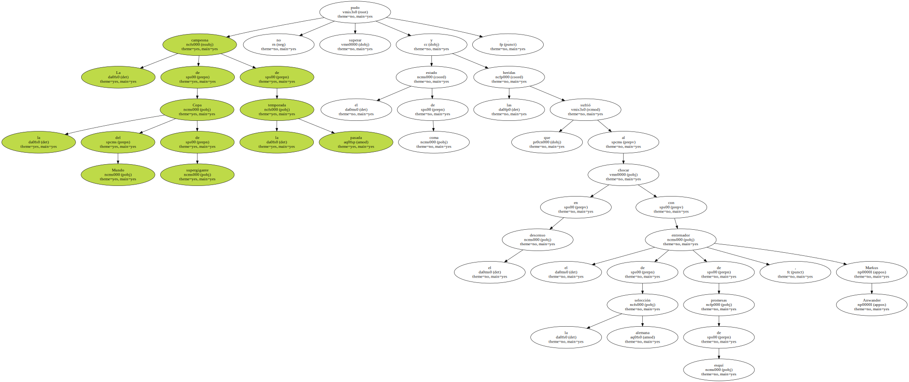
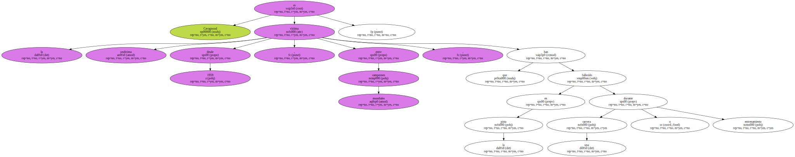

La esquiadora francesa Régine Cavagnoud , de 31 años , murió ayer en una clínica de Innsbruck ( Austria ) en la que había sido ingresada el pasado Lunes después de sufrir un espectacular accidente mientras se entrenaba en el glaciar de Pitztal , en los Alpes.

La campeona de la Copa del Mundo de supergigante de la pasada temporada no pudo superar el estado de coma y las heridas que sufrió al chocar en el descenso con el entrenador de la selección alemana de promesas de esquí , Markus Anwander.
Cavagnoud es la undécima víctima desde 1959 , entre campeones mundiales , que han fallecido en la pista durante una carrera o entrenamiento.
